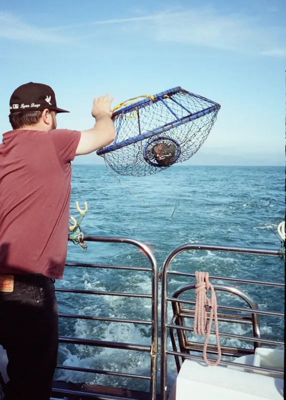
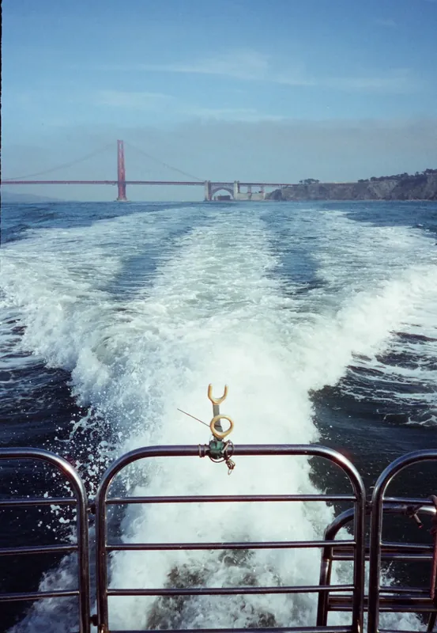
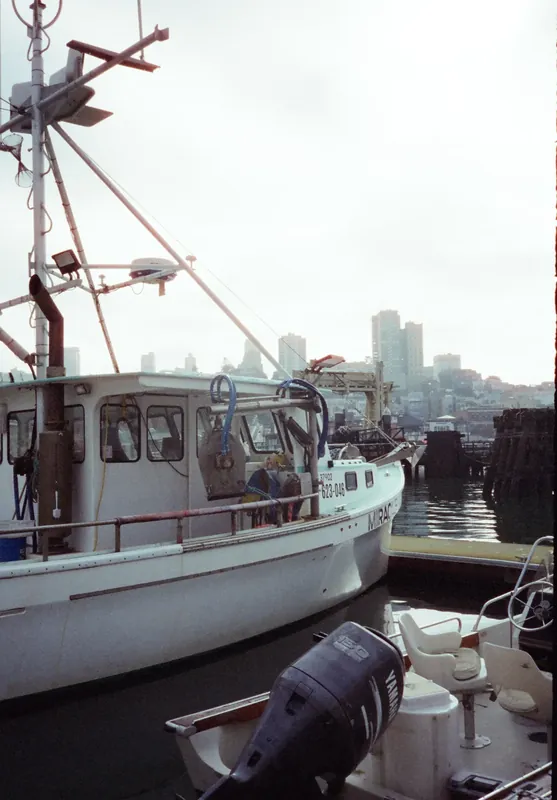
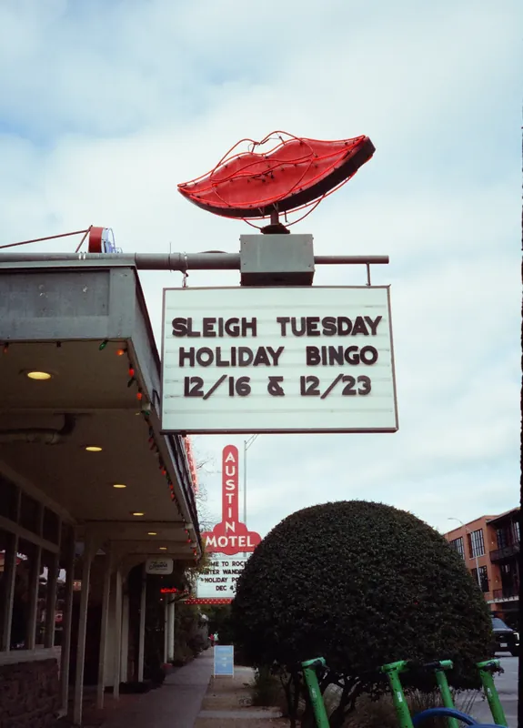
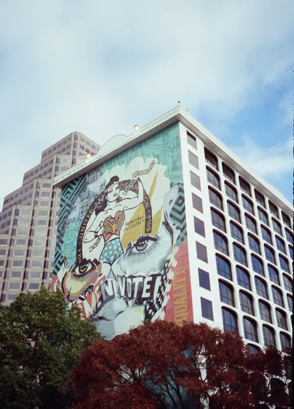

01Roll 676Bay Crossing · 过湾
半格 18×24
78 帧 / 选 12
旧金山 · 奥斯汀
联系表整卷 78 帧移上去看放大 · 点开看片台 · 红框 = 选用
 676·22R兜帽，看桥
676·22R兜帽，看桥Caltrain 从四号与国王街出站的时候，车厢还是空的。半格不必省着拍，于是月台、车门、玻璃上的倒影，一路都留了下来。
出海是下午的事。船从码头出去，绕到桥底下，船尾的白浪把铁栏杆切成一段一段。抄网、抛绳、收线——这些动作在 18×24 毫米的竖幅里，刚好装下一个人和他面前的海。
这一卷的后段换了地方：砖墙、壁画、霓虹，光也从海面的白转成了午后的黄。
 676·05R车门上的自行车676·05L月台，向南
676·05R车门上的自行车676·05L月台，向南 676·28R日落，鱼竿676·15R桥塔，仰视
676·28R日落，鱼竿676·15R桥塔，仰视一卷三十六格，走七十二张。卷 676

676·17L抄网 676·17R抛绳
676·17R抛绳
676·16R船尾的白浪
676·12L渔船 MIRACLE 676·24R桥与船尾的浪
676·24R桥与船尾的浪
676·33LBINGO
676·35L壁画楼本卷共 78 帧版面选用 12 张，整卷见上方联系表。半格 18×24，旧金山 · 奥斯汀。